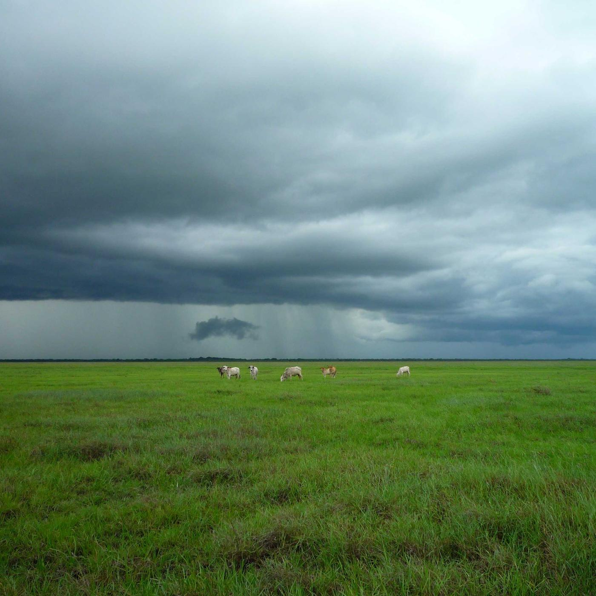

Pixel 10 Pro XL field card
ND8
1/50sshutter, 180°
50–200ISO
6500Kwhite balance

- Default walkaround filter for overcast daylight.
Light
Frame rate
Rig it
286 g of the OM 7P's 300 g limit: phone 232, SmallRig 5174 clamp 35, one K&F ND 19.
The ring covers the 1x and 0.5x, and both take the same ND. On the 0.5x, keep ISO at 200 or below: its smaller sensor is noisier.
0 of 4 done ·
Lock the app
10-bit HEVC, fast turnaround. Values follow the dial.
RAW Video or Direct Log. Values follow the dial.
- Shutter angle 180°Settings › Camera › Shutter Measurement › Shutter Angle. Tap Shutter on the HUD, choose 180° and tap the padlock until it turns blue.
- Stabilisation offSettings › Camera › Stabilization › Off, so EIS doesn't fight the gimbal motors.
- Zebras at 95%, ISO 50–200Monitor › Zebra 95%. Stripes on clouds or skin: step up an ND. Too dark on the ND64: raise ISO towards 400.
- Lock WB 6500K and focusTap WB, set it and lock. Tap the subject to focus, then switch AF to MF so dark glass can't set off hunting.
- Mode, histogram on, OIS offMode selector (lower left) to Direct Log or RAW Video. Spanner: Histogram on, OIS off. For 25p, scroll to the yellow hidden frame rates in the FPS menu.
- Direct preview with clippingTap DP on the top bar, then the sun icon so blown highlights glow on screen.
- Shutter 1/50s, ISO 50–200Tap Exposure (S / ISO), set the shutter and long-press until it turns yellow. Start ISO low and raise it until the clipping circles read 0.00%.
- Lock WB 6500K and focusPoint at neutral ground and long-press WB until yellow. Focus with peaking on Medium and leave it in manual.